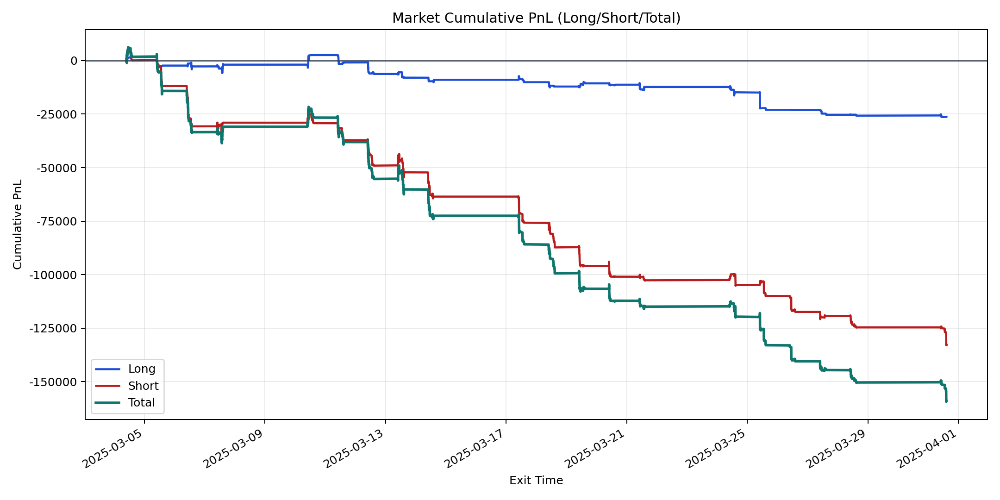
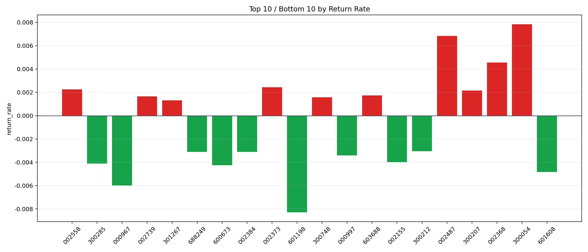

| repo_root | /home/haoranyou/data/output/dynamic_AUM_TAKER_index500 |
|---|---|
| period_months | 1 |
| period_label | 2025-03-04_to_2025-03-31 |
| start_time | 2025-03-04 09:45:57 |
| end_time | 2025-03-31 14:32:47 |
| n_trades | 7761 |
| n_symbols | 74 |
| total_pnl | -159066.26855000155 |
| long_total_pnl | -26243.95499999941 |
| short_total_pnl | -132822.31355000215 |
| total_entry_notional | 142372802.0 |
| long_entry_notional | 33199687.0 |
| short_entry_notional | 109173115.0 |
| total_return_rate | -0.0011172517946932137 |
| long_return_rate | -0.0007904880247816616 |
| short_return_rate | -0.0012166210843210085 |
| top_symbols_by_return | ["300054", "002487", "002368", "002373", "002558", "300207", "603688", "002739", "300748", "301267"] |
| bottom_symbols_by_return | ["601198", "000967", "601608", "600673", "300285", "002155", "000997", "002384", "688249", "300212"] |

